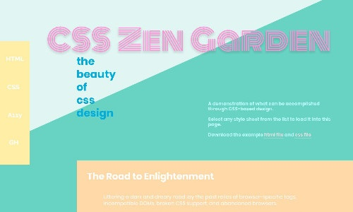
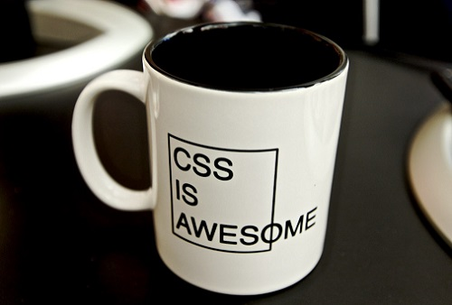
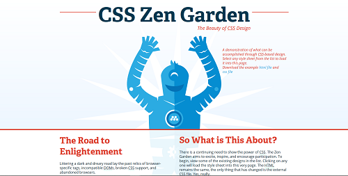

Access CSS Zen Garden to see different designs of a same content.

CSS Zen Garden
About CSS Zen Garden
The CSS Zen Garden is a World Wide Web development resource "built to demonstrate what can be accomplished visually through CSS-based designed."
Style sheets contributed by graphic designers from around the world are used to change the visual presentation of a single HTML file, producing hundreds of different designs. Aside from reference to an external CSS file, the HTML markup itself never changes. All visual differences are the result of the CSS (and supporting imagery). Source: Wikipedia: CSS Zen Garden

What makes Zen Garden so interesting
CSS Zen Garden currently has 221 different designs, various both in CSS elements and layout styles. I think learning the definitions of elements by heart is harder than trying them out and see how they works. Zen Garden provides a great source of examples for new learners to inspect and try everything themselves. For people with bad imagination, it also helps them to learn how to framed their website.

A Robot Named Jimmy
My favorite design
This is my favorite design: A Robot Named Jimmy
This design uses a <fixed> positioning for the background image so that when user scroll up or down, only the content is changing. Together with that, they applied the <z-index> to control the priority of elements.
They also use the <aside> element for showing other designs, archives, and resources at the bottom of the page, instead of on the side of the page like we see in the book.
Things I learn from this design
The line to the left and right of the first header is created by using :after. It's actually a straight line through the site but the header has greater priority using z-index. :after uses to add content after an element. Similarly, :before uses to add content before an element.
A very special effect I see on the page is the spinning sun-like image behind the robot. This effect was created using CSS transform property rotate and some keyframes (which I don't really understand now but I hope I will someday).
Finally, CSS @media Rule. This is used to control how the page will display when being viewed on different devices with different height, width, resolution,... This is a very cool one and also very convenient since there are many ways to get on the internet now.